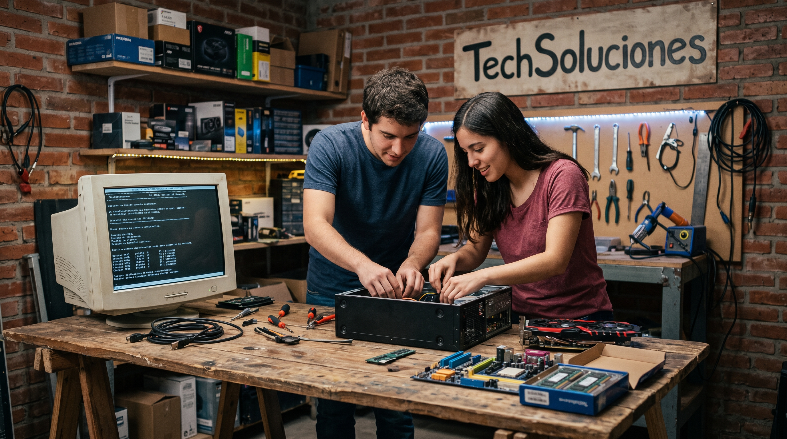
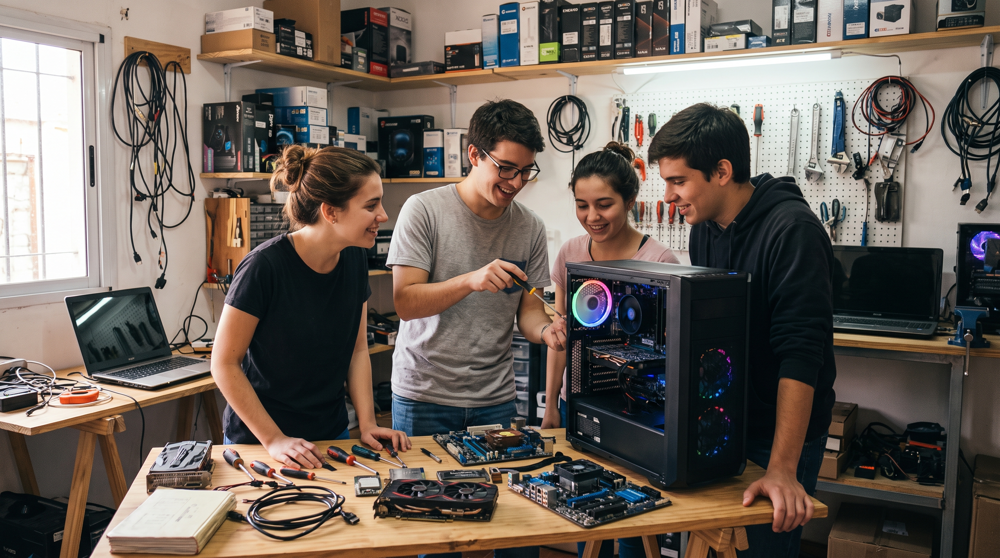
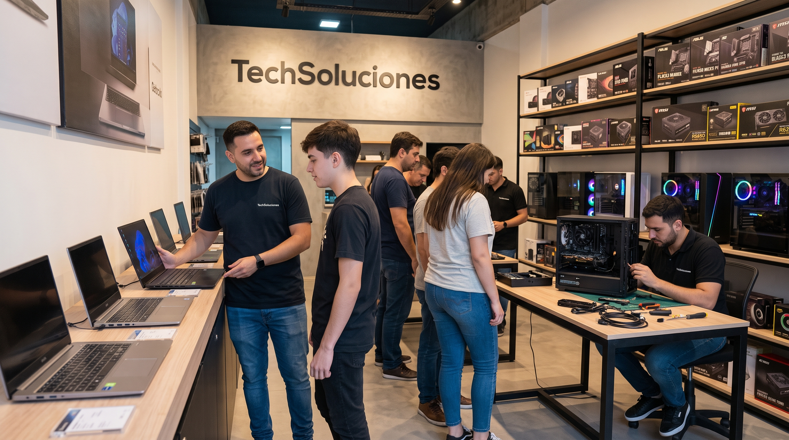
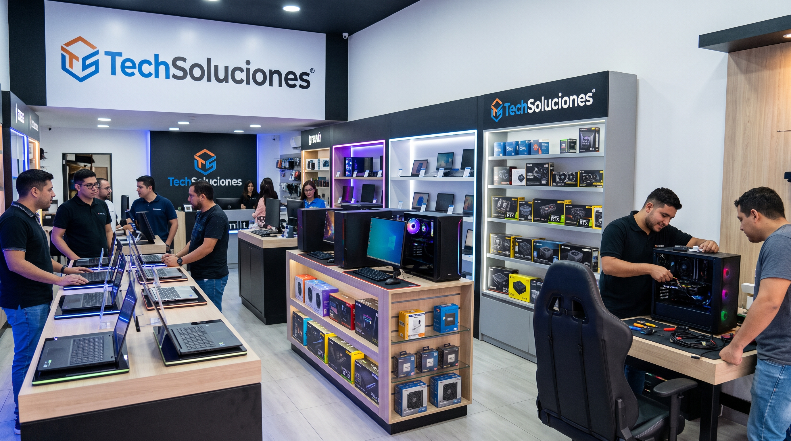

Nosotros
Sobre Nosotros — TechSoluciones
En TechSoluciones, nacimos del amor por los fierros, los fotogramas por segundo y la satisfacción incomparable de presionar el botón de encendido por primera vez tras armar una máquina desde cero. Nuestra historia comenzó en un pequeño garaje en 2014, cuando un grupo de amigos apasionados por el hardware y la tecnología se dio cuenta de algo fundamental: armar o comprar una computadora no debía ser un trámite frío, ni una experiencia intimidante plagada de modismos técnicos incomprensibles. Queríamos construir un lugar donde la potencia, la calidad y el asesoramiento genuino se encontraran bajo un mismo techo.
Lo que empezó como un taller artesanal dedicado a la optimización, limpieza y ensamble de equipos personalizados para conocidos y entusiastas locales, pronto creció impulsado por la confianza de nuestros primeros clientes. Comprendimos que cada persona tiene una necesidad única: el gamer que busca exprimir hasta el último frame en un monitor de alta tasa de refresco, el diseñador o editor de video que requiere capacidad de renderizado multi-núcleo sin interrupciones, el estudiante que necesita una notebook portátil y confiable para acompañar sus jornadas, o la Pyme que busca renovar su infraestructura informática con garantías sólidas.
Con esa premisa clara, evolucionamos para convertirnos en un punto de referencia en el sector informático. Hoy en día, en TechSoluciones ofrecemos un catálogo integral que abarca desde notebooks de última generación de las marcas líderes del mercado hasta componentes de PC de alto rendimiento: procesadores, tarjetas gráficas, memorias RAM de alta velocidad, almacenamiento SSD NVMe de ultrarrápida respuesta, fuentes de alimentación certificadas, gabinetes con flujo de aire optimizado y periféricos diseñados para la máxima precisión. Pero nuestro verdadero valor agregado no está únicamente en las cajas que vendemos, sino en la experiencia humana detrás de cada compra. Mantenemos intacto nuestro servicio de ensamble a medida, pruebas de estabilidad en laboratorio y un soporte técnico specializado que acompaña a cada cliente antes, durante y después de su elección.
Mirando hacia el futuro, la tecnología avanza a un ritmo vertiginoso, y en TechSoluciones estamos preparados para liderar ese camino. Nos dirigimos hacia una nueva etapa enfocada en la integración inteligente de hardware adaptado a cargas de trabajo con Inteligencia Artificial, la sostenibilidad ambiental en el empaquetado y reciclaje de componentes, y la expansión de nuestra plataforma digital para brindar diagnósticos en tiempo real y asistencia remota aún más ágil. Queremos que la tecnología sea una herramienta accesible, transparente y emocionante para todos.
Ya sea que estés buscando tu primera notebook, planeando actualizar la placa de video de tu setup actual o diseñando una estación de trabajo profesional desde cero, en TechSoluciones estamos para acompañarte en cada paso. Porque no solo vendemos computadoras: impulsamos tus proyectos, tus jugadas y tu pasión.

El Origen (2014): El Garaje y los Comienzos
Esta imagen muestra a los fundadores originales de TechSoluciones en su humilde taller-garaje en 2014. Captura el desorden creativo, la pasión y el trabajo en equipo de sus primeros días, rodeados de componentes, cables y herramientas mientras ensamblan una de sus primeras computadoras. Es ideal para ilustrar la primera mitad del texto sobre cómo nació el proyecto con amigos y entusiasmo.


El Presente y Crecimiento: Nuestra Tienda y Taller Actual
Esta imagen representa lo que es la marca hoy: un espacio moderno, profesional y lleno de vida. Muestra a un asesor o técnico de TechSoluciones interactuando cordialmente con un cliente en un local equipado con notebooks de última generación, estanterías llenas de componentes y un área de servicio técnico visible al fondo. Transmite la calidez del asesoramiento y la escala actual del negocio.
